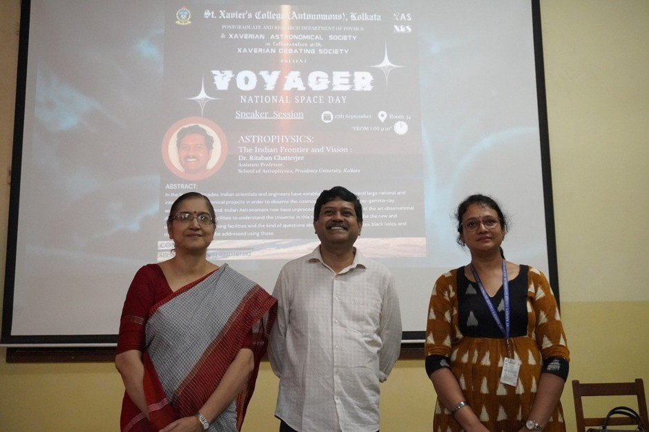

St. Xavier's College (Autonomous), Kolkata, inaugurated the 2024–25 session of the Xaverian Astronomical Society (XAS) on 27th September 2024 with an event titled Voyager. The program was organized in celebration of National Space Day, commemorating the historic success of India's lunar missions. This joint initiative by the Postgraduate and Research Department of Physics and XAS, in collaboration with the Xaverian Debating Society, set an intellectual tone for the upcoming academic year.

National Space Day Celebration
In observance of National Space Day, the society reflected on the mechanics of lunar exploration. Discussions focused on the trajectory and landing precision required for modern lunar probes. Understanding the orbital transitions from Earth to the Moon is a cornerstone of current astrophysical study at the society.
The event also featured the official announcement of the new Student Working Committee for the session. Following the formal ceremony, an inter-departmental debate was conducted, exploring the philosophical and scientific implications of space colonization and the ethics of resource extraction from celestial bodies.
Astrophysical Perspectives
A key highlight of Voyager 2024 was the exploration of high-energy astrophysical phenomena. Special focus was given to the study of Black Holes and the lensing effects predicted by General Relativity. To assist students in visualizing these complex structures, the session included an analysis of the anatomy of an accretion disk.
The inauguration concluded with an interactive session at the Fr. Eugene Lafont Observatory (FELO), where members were introduced to the observational equipment and the research methodologies planned for the 2024–25 term. This year, the society aims to delve deeper into data extraction from stellar spectra and solar magnetohydrodynamics.